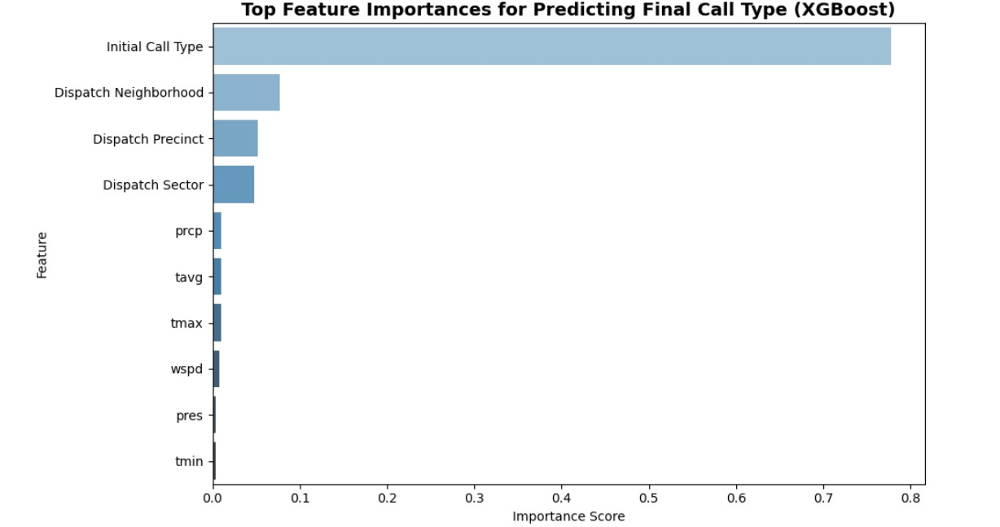
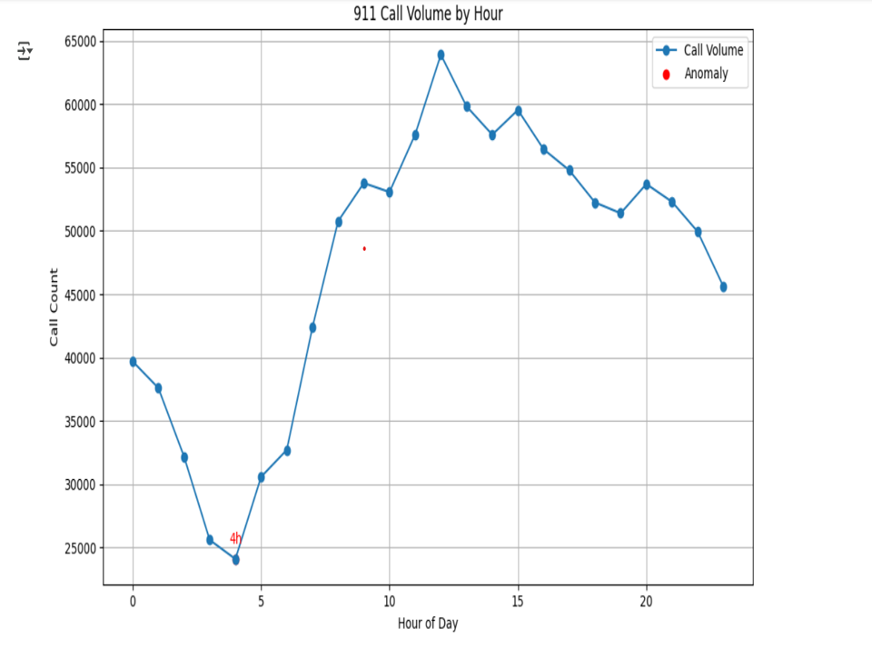

Preprocessing
Data Sources
- Seattle PD 911 Calls (April 2023–April 2025)
- Seattle Historical Weather (via Meteostat)
- SPD Dispatch Neighborhoods GeoJSON
Processing Steps
- Cleaned rows with invalid or missing time/location data
- Binned timestamps into 6 time-of-day categories
- Merged weather by date
- Standardized neighborhood names and linked to GeoJSON
Dataset Columns
| Column Name | Description |
|---|---|
| CAD Event Number | Unique ID for each 911 event |
| CAD Event Clearance Description | Final resolution label for the call |
| Call Type | Category of call (e.g., emergency or non-emergency) |
| Priority | Response urgency level (lower means more urgent) |
| Initial Call Type | Call type as initially reported |
| Final Call Type | Call type after officer classification |
| CAD Event Original Time Queued | Timestamp when the call was received |
| CAD Event Arrived Time | Time when responders arrived |
| Dispatch Precinct / Sector / Beat | Geographical subdivisions for dispatching |
| Dispatch Longitude / Latitude | Location of the incident |
| Dispatch Reporting Area | Internal reporting code |
| CAD Event Response Category | Broad type of response |
| Call Sign Dispatch/Scene/In-Service Times | Timestamps of response units' movements |
| Call Sign Total Service Time (s) | Total time units spent on scene (varies by responder type) |
| Call Sign Dispatch Delay / Response Time | Delay between dispatch and action |
| Call Type Indicator | Extra classification label |
| Dispatch Neighborhood | Named area where the call occurred |
| Call Type Received Classification | Category used by call takers |
| date | Date extracted from call timestamp |
| tavg, tmin, tmax | Average, min, and max temperature for that day |
| prcp, snow | Daily precipitation and snowfall |
| wdir, wspd, wpgt | Wind direction, speed, and gusts |
| pres | Atmospheric pressure |
| tsun | Sunshine duration |
| Queued Datetime | Parsed datetime object for call timestamp |
| Hour | Hour of day when call was received |
| Time of Day Bin | Binned hour into 6 categories (e.g., Morning, Night) |
Spatiotemporal Analysis
Initial Call Volume Map
This map shows raw 911 call volume across Seattle neighborhoods before clustering.
K-Means Clustering
Two clusters were identified using silhouette score. They reveal a distinction between high-activity and low-activity areas.
PCA + Agglomerative Clustering
PCA reduced dimensionality of call-type distributions; agglomerative clustering found 3 behavioral clusters.
HDBSCAN
Automatically determined 4 clusters and flagged outliers, showing how call behavior varies across core and residential zones.
GMM with BIC
GMM with 5 components (selected using BIC) captured nuanced behavior. Some clusters showed extreme officer-initiated activity.
Spatiotemporal KMeans
We applied KMeans clustering independently for each time-of-day bin to analyze how spatial structure varies over time.


Association Analysis
We used the Apriori algorithm to identify strong associations between weather, time, and call types. Rules with high confidence revealed patterns like community-generated calls strongly correlating with specific response types.
The following table highlights the top 10 association rules with high confidence identified from the dataset using rule mining techniques:
| # | Rule | Confidence | Support |
|---|---|---|---|
| 1 | Rule 43: CAD Event Response Category=SPD, Call Type=911 → Call Type Received Classification=COMMUNITY_GENERATED, Call Type Indicator=DISPATCH | 6.00 | 3.54 |
| 2 | Rule 40: Call Type=911 → CAD Event Response Category=SPD, Call Type Received Classification=COMMUNITY_GENERATED, Call Type Indicator=DISPATCH | 5.98 | 3.54 |
| 3 | Rule 45: Call Type=911, Call Type Received Classification=COMMUNITY_GENERATED → CAD Event Response Category=SPD, Call Type Indicator=DISPATCH | 5.98 | 3.54 |
| 4 | Rule 46: Call Type=911, Call Type Indicator=DISPATCH → CAD Event Response Category=SPD, Call Type Received Classification=COMMUNITY_GENERATED | 5.98 | 3.54 |
| 5 | Rule 38: Call Type Received Classification=COMMUNITY_GENERATED → CAD Event Response Category=SPD, Call Type=911, Call Type Indicator=DISPATCH | 4.47 | 3.54 |
| 6 | Rule 39: Call Type Indicator=DISPATCH → CAD Event Response Category=SPD, Call Type=911, Call Type Received Classification=COMMUNITY_GENERATED | 4.47 | 3.54 |
| 7 | Rule 44: Call Type Received Classification=COMMUNITY_GENERATED, Call Type Indicator=DISPATCH → CAD Event Response Category=SPD, Call Type=911 | 4.47 | 3.54 |
| 8 | Rule 41: CAD Event Response Category=SPD, Call Type Received Classification=COMMUNITY_GENERATED → Call Type=911, Call Type Indicator=DISPATCH | 4.49 | 3.54 |
| 9 | Rule 42: CAD Event Response Category=SPD, Call Type=911 → Call Type Received Classification=COMMUNITY_GENERATED, Call Type Indicator=DISPATCH | 4.49 | 3.54 |
| 10 | Rule 37: CAD Event Response Category=SPD → Call Type=911, Call Type Received Classification=COMMUNITY_GENERATED, Call Type Indicator=DISPATCH | 3.56 | 3.54 |
This table presents another perspective on the top association rules, showing low confidence and support values:
| # | Rule | Confidence | Support |
|---|---|---|---|
| 1 | Rule 3: Call Type Indicator=DISPATCH → Call Type=911 | 0.75 | 0.59 |
| 2 | Rule 5: Call Type Received Classification=COMMUNITY_GENERATED → Call Type=911 | 0.75 | 0.59 |
| 3 | Rule 6: CAD Event Response Category=SPD → Call Type Indicator=DISPATCH | 0.79 | 0.79 |
| 4 | Rule 8: CAD Event Response Category=SPD → Call Type Received Classification=COMMUNITY_GENERATED | 0.79 | 0.79 |
| 5 | Rule 47: CAD Event Response Category=SPD, Call Type Received Classification=COMMUNITY_GENERATED, Call Type Indicator=DISPATCH → Call Type=911 | 1.50 | 3.54 |
| 6 | Rule 48: CAD Event Response Category=SPD, Call Type=911, Call Type Received Classification=COMMUNITY_GENERATED → Call Type Indicator=DISPATCH | 2.00 | 3.54 |
| 7 | Rule 49: CAD Event Response Category=SPD, Call Type=911, Call Type Indicator=DISPATCH → Call Type Received Classification=COMMUNITY_GENERATED | 2.00 | 3.54 |
| 8 | Rule 50: Call Type=911, Call Type Received Classification=COMMUNITY_GENERATED, Call Type Indicator=DISPATCH → CAD Event Response Category=SPD | 1.99 | 3.54 |
| 9 | Rule 15: CAD Event Response Category=SPD → Call Type=911, Call Type Indicator=DISPATCH | 1.78 | 1.77 |
| 10 | Rule 21: CAD Event Response Category=SPD → Call Type=911, Call Type Received Classification=COMMUNITY_GENERATED | 1.78 | 1.77 |
Predictive Modeling
XGBoost was used to predict final call types based on initial call type, location, and weather. Achieved 62.10% accuracy (vs baseline of 19.47%).
Anomaly Detection
Using Z-score and Isolation Forest methods, we detected unusual spikes or drops in 911 activity across time, location, and weather conditions.

Conclusion
- Explored 1M+ 911 records with time, location, and weather features
- Identified clusters based on spatial and temporal trends
- Generated insights using association rules and predictive modeling
- Flagged unusual patterns through anomaly detection
Future Work
- Incorporate traffic and population density data
- Try sequential pattern mining on event sequences
- Improve model performance with neural networks